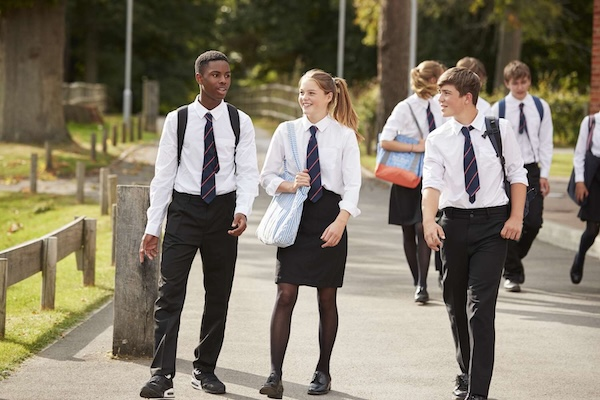

Most countries’ education systems have had what you might call educational disasters, but, sadly, in many areas of certain countries these ‘disasters’ are still evident today. The English education system is unique due to the fact that there are still dozens of schools which are known as private schools and they perpetuate privilege and social division. Most countries have some private schools for the children of the wealthy; England is able to more than triple the average number globally. England has around 3,000 private schools and just under half a million children are educated at them whilst some nine million children are educated at state schools. The overwhelming majority of students at private schools also come from middle-class families.
The result of this system is evident and it has much English history embedded within it. The facts seem to speak for themselves. In the private system almost half the students go on to University, whilst in the state system only about eight per cent make it to further education. However, statistics such as these can be deceptive due to the fact that middle-class children do better at examinations than working class ones, and most of them stay on at school after 16. Private schools therefore have the advantage over state schools as they are entirely ‘middle class’, and this creates an environment of success where students work harder and apply themselves more diligently to their school work.
Private schools are extortionately expensive, being as much as £18,000 a year at somewhere such as Harrow or Eton, where Princes William and Harry attended, and at least £8,000 a year almost everywhere else. There are many parents who are not wealthy or even comfortably off but are willing to sacrifice a great deal in the cause of their children’s schooling. It baffles many people as to why they need to spend such vast amounts when there are perfectly acceptable state schools that don’t cost a penny. One father gave his reasoning for sending his son to a private school, ‘If my son gets a five-percent-better chance of going to University then that may be the difference between success and failure.” It would seem to the average person that a £50,000 minimum total cost of second level education is a lot to pay for a five-percent-better chance. Most children, given the choice, would take the money and spend it on more enjoyable things rather than shelling it out on a school that is too posh for its own good
However, some say that the real reason that parents fork out the cash is prejudice: they don’t want their little kids mixing with the “workers”, or picking up an undesirable accent. In addition to this, it wouldn’t do if at the next dinner party all the guests were boasting about sending their kids to the same place where the son of the third cousin of Prince Charles is going, and you say your kid is going to the state school down the road, even if you could pocket the money for yourself instead, and, as a result, be able to serve the best Champagne with the smoked salmon and duck.
It is a fact, however, that at many of the best private schools, your money buys you something. One school, with 500 pupils, has 11 science laboratories; another school with 800 pupils, has 30 music practice rooms; another has 16 squash courts, and yet another has its own beach. Private schools spend £300 per pupil a year on investment in buildings and facilities; the state system spends less than £50. On books, the ratio is 3 to 1.
One of the things that your money buys which is difficult to quantify is the appearance of the school, the way it looks. Most private schools that you will find are set in beautiful, well-kept country houses, with extensive grounds and gardens. In comparison with the state schools, they tend to look like castles, with the worst of the state schools looking like public lavatories, perhaps even tiled or covered in graffiti. Many may even have an architectural design that is just about on the level of an industrial shed.